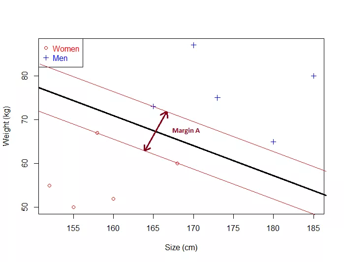
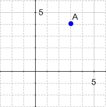
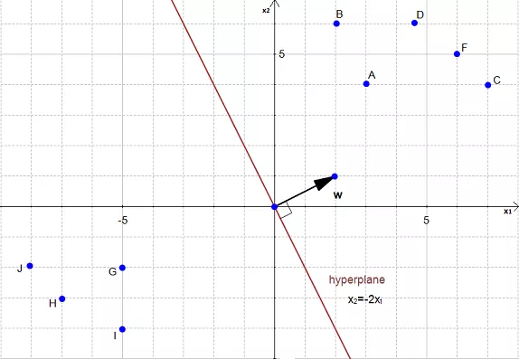
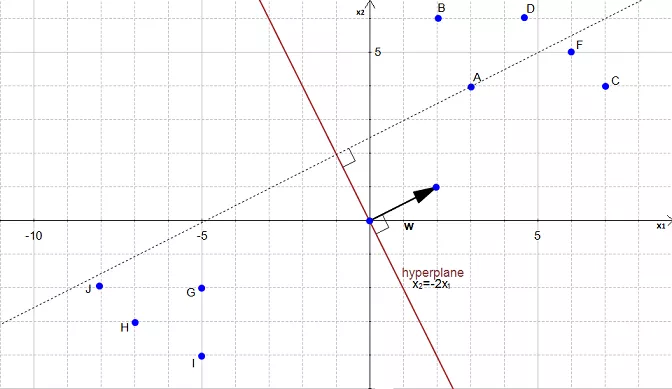
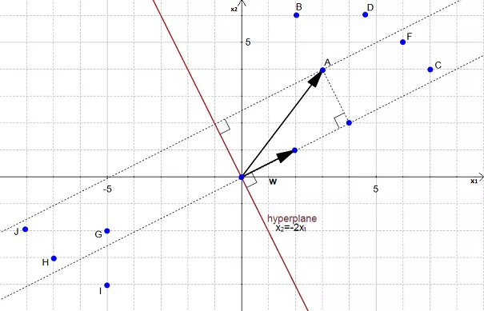
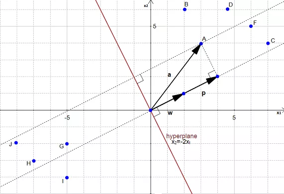
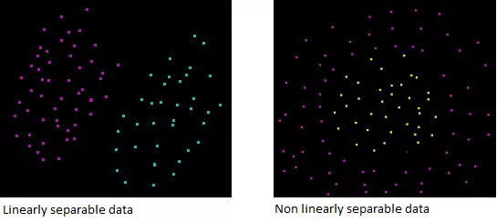

Support Vector Machines
Posted on Tue 17 January 2017 in Learning
SVM
Do visit SVM Tutorial website.
The main goal in SVM is to design a hyperplane that classifies all training vectors in 2 classes.
- SVM needs training data thus comes under supervised learning.
- SVM is a classification algorithm
Example :

- We have plotted the size and weight of several people, and there is also a way to distinguish between men and women.
With such data, using a SVM will allow us to answer the following question:
Given a particular data point (weight and size), is the person a man or a woman ?
- For instance: if someone measures 175 cm and weights 80 kg, is it a man of a woman?
Hyperplane
In geometry, a hyperplane is a subspace of one dimension less than its ambient space.
Example :
-
If a space is 3-dimensional then its hyperplanes are the 2-dimensional planes, while
-
If the space is 2-dimensional, its hyperplanes are the 1-dimensional lines.
This notion can be used in any general space in which the concept of the dimension of a subspace is defined.
Maximum margin?
Now the following problem exists :
There can be 'n' number of hyperplanes that can be drawn that separate both our classes.
But SVM's goal is to get the hyperplane that leaves the maximum margin from both classes ( i.e. the best choice )
Thus, we arrive at the term : Maximum Margin Hyperplane.

The Optimal HyperPlane is a no man's land.
- This means that the optimal hyperplane will be the one with the biggest margin.
That is why the objective of the SVM is to find the optimal separating hyperplane which maximizes the margin of the training data.
Equation for the hyperplane :
How to Calculate this margin?
To do so, we need certain pre-requisites:
SVM = Support VECTOR Machine
What is a vector ?
If we define a point \(A(3,4)\) in \(\Re^2\), we can plot it like this :

Definition: Any point \(x=(x1,x2),x\ne0\), in \(\Re^2\),\(\Re^2\) specifies a vector in the plane, namely the vector starting at the origin and ending at \(x\).
i.e. there is a vector between origin and A.
If we say that the point at the origin is the point \(O(0,0)O(0,0)\) then the vector above is the vector \(\vec{OA}\). We could also give it an arbitrary name such as \(u\).
Definition: A vector is an object that has both a magnitude and a direction.
SVM HyperPlane :
Understanding the equation of the hyperplane :
- Equation of a line is \( y= mx +c\)
- For Hyperplane, it is defined as :
How do the 2 forms relate? In hyperplane equation, we can see that the name of the variables are in bold which means that they are vectors.
Morover, \(w^Tx\) is how we compute the inner product of the 2 vectors a.k.a dot product.
Note :
is the same thing as
Given 2 vectors,
and
Thus, the dot product will be
The 2 equations are just different ways of expressing the same thing.
Note : \(w_0\) is \(-c\), which means that this value determines the intersection of the line with the vertical axis.
We use the hyperplane equation because it is then easy to work in more than 2 dimensions
The vector \(w\) will always be normal to the hyperplane.
This property will come in handy to compute the distance from a point to the hyperplane.
Computing the distance :

To simplify this example, we have set \(w_0=0\).
In the above figure, the equation of the hyperplane is :
Which is equivalent to
with
and
\(w\) is a vector.
AIM : To calculate the distance between \(A(3,4)\) and its projection onto the hyperplane.

We can view the point \(A\) as a vector from the origin to \(A\). If we project it onto the normal vector \(w\). 
We get the vector \(p\) after projection. 
Our goal is to find the distance between the point \(A(3,4)\) and the hyperplane.
We can see in the figure that this distance is the same thing as \(|p|\) Let's compute this value.
To compute, we need the pre-requisite of Vector Projections :
Vector Projections
The vector projection of a vector \(\vec{a}\) on (or onto) a non-zero vector \( \vec{b}\) (a.k.a. the vector component or vector resolution of \(\vec{a}\) in the direction of \(\vec{b}\)) is the orthogonal projection (shadow) of \(\vec{a}\) onto a straight line parallel to \(\vec{b}\). It is a vector parallel to \(\vec{b}\), defined as :
where \(a_1\) is a scalar, called the scalar projection of a onto b, and \(\hat{b}\) is the unit vector in the direction of b.
- In turn, the scalar projection is defined as
where the operator \(\dot\) denotes a dot product, \(|a|\) is the length of a, and \(\theta\) is the angle between \(\vec{a}\) and \(\vec{b}\).
The scalar projection is equal to the length of the vector projection, with a minus sign if the direction of the projection is opposite to the direction of b.
Math for Orthogonal Projection
We start with two vectors, \(\vec{w}=(2,1)\) which is normal to the hyperplane, and \(\vec{a}=(3,4)\) which is the vector between the origin and \(A\).
By Pythagoras theorem, the magnitude of \(w\) is :
Now we take a unit vector \(\vec{u}\) in the direction of \(\vec{w}\).
Thus \(\vec{u}\) becomes :
Given \(\vec{p}\) is the orthogonal projection of \(\vec{a}\) onto \(\vec{w}\) so :
\(\vec{p}=(\vec{u}.\vec{a})\vec{u}\)
Here, we have calculated the scalar projection and now need to multiply it with the unit vector in direction of \(\vec{w}\) i.e. :
Now, we need the value/magnitude of this projection :
Compute the margin of the hyperplane:
Now that we have the distance \(|p|\) between \(A\) and the hyperplane, the margin is defined by:
Optimal Margin Hyperplane :

The above margin is not the biggest/optimal margin. What we need is the optimal margin.
 .
.
From the above figure, it's evident that the biggest margin is \(M_2\) and not \(M_1\). Thus, the optimal hyperplane is slightly left from our initial hyperplane:
How to find the biggest margin ?
Method:
- Take a dataset
- Select 2 hyperplanes which separate the data with no points between them.
- Maximize their distance (the margin).
The region bounded by the 2 hyperplanes will be the biggest possible margin.
Step by Step breakdown :
Step 1 : You have a dataset \(D\) and you want to classify it :
Most of the time, the data will be composed of \(n\) vectors \(\vec{x_i}\).
Each \(\vec{x_i}\) will also be associated with a value \(y_i\) indicating if the element belongs to the class (+1) or not (i.e. -1).
- \(y_i\) can only have 2 possible values -1 or +1.
Moreover, most of the time,your vector \(\vec{x_i}\) ends up having a lot of dimensions. We can say that \(\vec{x_i}\) is a \(p\)-dimensional vector if it has \(p\) dimensions.
- Thus, the dataset \(D\) is the set of \(n\) couples of element \((\vec{x_i},y_i)\).
The more formal definition of an initial dataset in set theory is:
Step 2 : Select 2 hyperplanes separating the data with no points between them.
Finding 2 hyperplanes separating some data is easy when you have a pencil and a paper. But with some \(p\)-dimensional data it becomes more difficult because you can't draw it.
Moreover, even if your data is only 2-dimensional it might not be possible to find a separating hyperplane!
The classification is only possible when the data is linearly separable.

Assuming that our dataset \(D\) is linearly separable. We now want to find two hyperplanes with no points between them, but we don't have a way to visualize them.
Take another look at the hyperplane equation.
Another way in which the above equation can be written as is this:
First, we recognize another notation for the dot product, the article uses \(w.x\) instead of \(w^Tx\).
Now wait a minute... Where does the \(+b\) come from?
It's a notation policy. Our notation incoporates 3D vectors. Whereas other books have a 2D notation:
Given 2 3-D vectors \(w'(b,-a,1)\) and \(x'(1,x,y)\)
Given 2 2-dimensional vectors \(w'(-a,1)\) and \(x'(x,y)\)
Now, if we add \(b\) on both sides of the equation \((2)\) we get:
For the rest of this article, we will use 2-dimensional vectors ( as in equation(2))
Given a hyperplane \(H_0\) separating the dataset satisfying :
We can select 2 other hyperplanes \(H_1\) and \(H_2\) which also separate the data and have the following equations :
and
so that \(H_0\) is equidistant from \(H_1\) and \(H_2\).
However, here the variable \(\delta\) is not necessary. So we can set \(\delta= 1\) to simplify the problem.
and
Now, we want to be sure that they have no points between.
We won't select any hyperplane, we will only select the those who meet the 2 following constraints:
For each vector \(x_i\) either :